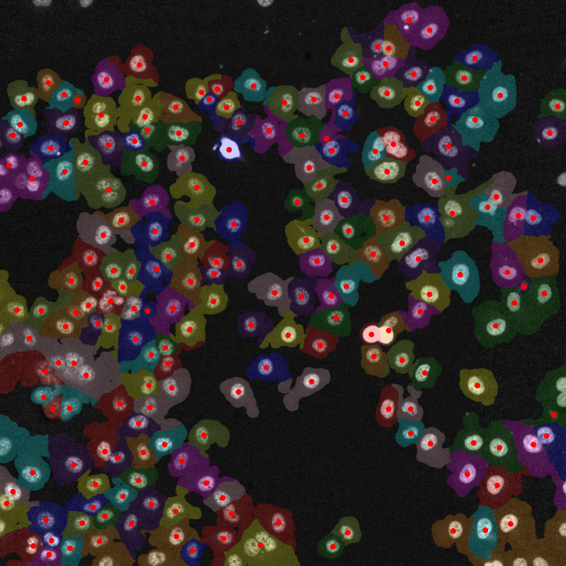
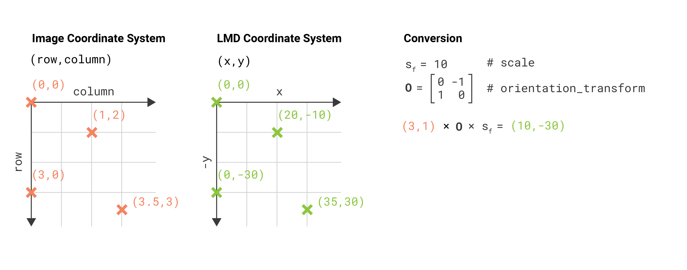
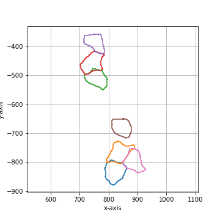
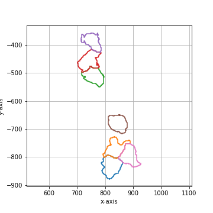
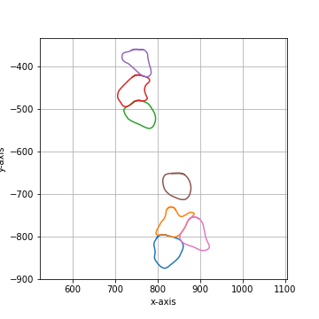
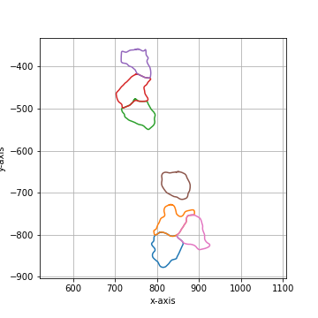
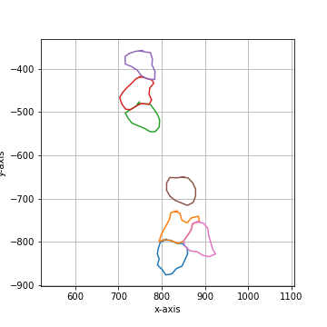
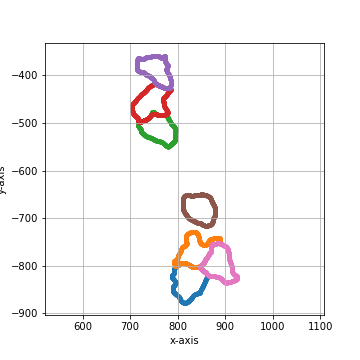
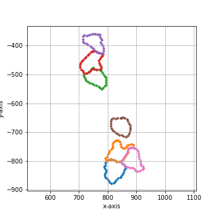
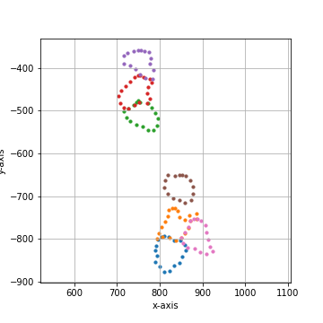

2. Using Segmented Images
2.1. Background
{kind=link}
Although the py-lmd package is meant to serve as framework for creating your own workflows, generating cutting data based on segmentations is the central application of this package. When biological images are segmented, every pixel receives a class or label. Labels can be used to identify single cells and distinguish them from the background or can categorize
cells or areas based on phenotypes, functions or location.
In the following example we will assume that a segmentation was performed to assign labels to individual cells and distinguish their cytosol from the background. The procedures are though applicable to all types of labels.
- As this process is so central to the usage of the Leica LMD, the
SegmentationLoadercan be used to create cutting data based on segmentation data. The workflow was specifically designed to work with whole slide images, as large as the LMD membrane slides, and large numbers of single cells. Therefore, different processing steps are included which optimize single cell shapes and decrease overall cutting time.
2.2. Different Coordinate Systems
Using images to generate cutting data with the py-lmd package makes it necessary to transform the image coordinate system to the Leica LMD coordinate system. Although this functionality is part of the package, it is important to highlight the differences in the coordinate systems and to keep in mind what coordinate system is used when calibration points are determined from image data.
The coordinates for the Leica LMD are defined as (x, y) coordinates with the x-axis extending to the right and the y-axis extending to the top. All cutting data should exist in this coordinate system and should be calibrated accordingly. When cutting data is generated based on whole slide images we have to keep in mind that images are often indexed differently. Images in Fiji or Numpy are indexed as (row, column) with the rows extending downwards and the columns extending to the right. If we want to identify positions in image data - like calibration crosses or single cells - we have to translate their position in the (row, column) format to the (x, y) format.
The py-lmd library has been designed in a way which allows to transform the coordinate system prior to saving. Therefore one can specify all coordinates in the image coordinate system and rely on the library to handle the transformation. In this case the orientation_transform attribute needs to be set when the Collection is created.
calibration = np.array([[10, 10], [1000, 10], [500, 500]])
collection = Collection(calibration_points = calibration)
collection.orientation_transform = np.array([[0, -1], [1, 0]])
In this case all coordinates for calibration points and shapes can be set in form of (row, column) coordinates. The orientation transform is only applied when the Collection is saved or, if desired, when the Collection is plotted.
2.3. Getting started with the SegmentationLoader
Before we can start with the SegmentationLoader, we have to load our image which contains the labels for our cells. The segmentation loader expects a numpy array of integers where the background is assigned to label 0. There are no further restrictions to the shape or number of labels other than being continuos. All pixel with a certain label need to be in contact with each other. Functional labels which assign cells based on the cell type must be converted.
As example we will use the cytosol segmentation seen above which can be found under notebooks/Image_Segmentation/segmentation_cytosol.tiff. First, we will load this image and convert it to a numpy array.
import numpy as np
from PIL import Image
im = Image.open('segmentation_cytosol.tiff')
segmentation = np.array(im).astype(np.uint32)
Based on this segmentation we have to select group of cells. These groups can be assigned to separate wells and intersecting shapes and cutting paths will be optimized separately for every group. In our case, all cells will be selected and assigned to the same well A1.
all_classes = np.unique(segmentation)
cell_sets = [{"classes": all_classes, "well": "A1"}]
Next we need to specify the calibration points which were identified in the image and the coordinate transform which should be applied. By default, the SegmentationLoader will read all coordinates as (row, column) based on the top left origin. Therefore, the calibration points should be specified in the same way.
calibration_points = np.array([[0,0],[0,1000],[1000,1000]])
loader_config = {
'orientation_transform': np.array([[0, -1],[1, 0]])
}
We can now create an instance of the SegmentationLoader and generate the cutting data.
from lmd.lib import SegmentationLoader
sl = SegmentationLoader(config = loader_config)
shape_collection = sl(segmentation,
cell_sets,
calibration_points)
shape_collection.plot(fig_size = (10, 10))

2.4. Overview of Configuration
Parameter |
Default Value |
Description |
|---|---|---|
|
|
dilation of the cutting mask in pixel before intersecting shapes in a selection group are merged |
|
|
erosion of the cutting mask in pixel before intersecting shapes in a selection group are merged |
|
|
Cutting masks are transformed by binary dilation and erosion |
|
|
number of datapoints which are averaged for smoothing. The resolution of datapoints is twice as high as the resolution of pixels. |
|
|
fold reduction of datapoints for compression |
|
|
Optimization of the cutting path inbetween shapes. Optimized paths improve the cutting time and the microscopes focus. valid options are |
|
|
Paramter required for hilbert curve based path optimization. Defines the order of the hilbert curve used, which needs to be tuned with the total cutting area. |
|
|
Parameter required for greedy path optimization. Instead of a global distance matrix, the k nearest neighbours are approximated. The optimization problem is then greedily solved for the known set of nearest neighbours until the first set of neighbours is exhausted.Established edges are then removed and the nearest neighbour approximation is recursivly repeated. |
|
|
Overlapping shapes are merged based on a nearest neighbour heuristic. All selected shapes closer than distance_heuristic pixel are checked for overlap. |
2.5. Processing Order
Binary dilation of cell masks |
Binary erosion of cell masks |
If activated join intersecting shapes |
Binary smoothing of joined cell masks |
Filling holes of joined cell masks |
Smoothing by convolution |
Compress polygons |
Optimize global cut path |
binary_smoothing |
||
|---|---|---|
Binary smoothing by applying a binary dilation followed by a erosion of the same size.
Binary smoothing can extend above the convex hull and therefore lead to intersection with
other shapes. |
||
|
|
|

|
 | |
convolution_smoothing |
||
|---|---|---|
Smooth the polygon by applying a circular, linear convolution of given size.
The default convolution kernel with |
||
|
|
|
|  |  | |
poly_compression_factor |
||
|---|---|---|
Compress the number of vertices by a given factor. |
||
|
|
|
|  |  | |
|  |  |  |
===== Collection Stats =====
Number of shapes: 7
Number of vertices: 4,913
============================
Mean vertices: 702
Min vertices: 599
5% percentile vertices: 617
Median vertices: 687
95% percentile vertices: 811
Max vertices: 839
|
===== Collection Stats =====
Number of shapes: 7
Number of vertices: 245
============================
Mean vertices: 35
Min vertices: 30
5% percentile vertices: 31
Median vertices: 34
95% percentile vertices: 40
Max vertices: 42
|
===== Collection Stats =====
Number of shapes: 7
Number of vertices: 123
============================
Mean vertices: 18
Min vertices: 15
5% percentile vertices: 15
Median vertices: 17
95% percentile vertices: 20
Max vertices: 21
|